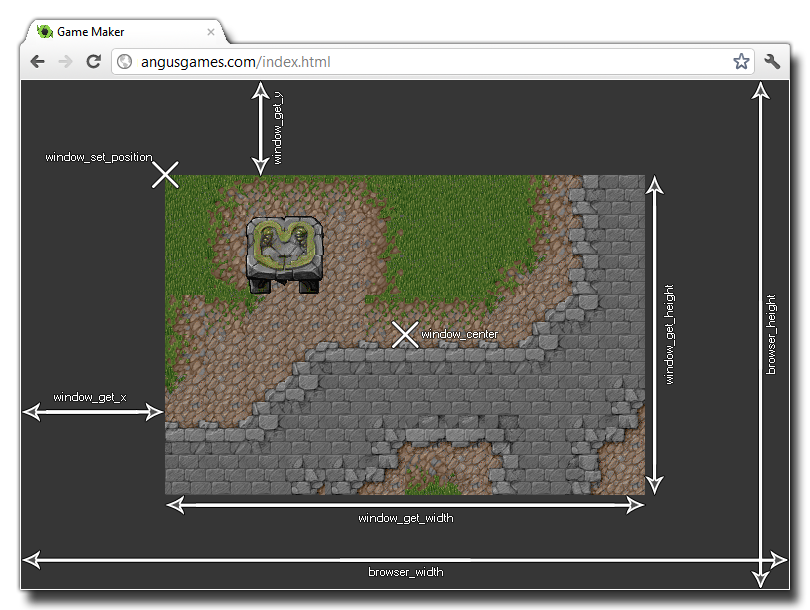

The actual game you create happens in a window, and this window
has a number of properties, like whether it has a border, whether
it is full screen, etc. Normally these values are set in the
Windows Tab of the Global
game Settings but you can change them during the game.
NOTE: These functions are for Windows, Ubuntu (Linux),
MacOS and HTML5 target modules only and may not work on any other
device.
The following image illustrates how all the windows functions
relate and interact with each other:  The following functions
exist to change and get game window properties:
- window_center
- window_handle
- window_get_caption
- window_get_colour
- window_get_fullscreen
- window_get_height
- window_get_width
- window_get_x
- window_get_y
- window_get_cursor
- window_get_visible_rects
- window_mouse_get_x
- window_mouse_get_y
- window_mouse_set
- window_set_caption
- window_set_colour
- window_set_fullscreen
- window_set_position
- window_set_size
- window_set_rectangle
- window_set_cursor
- window_set_min_width
- window_set_max_width
- window_set_min_height
- window_set_max_height
- window_has_focus
- window_device